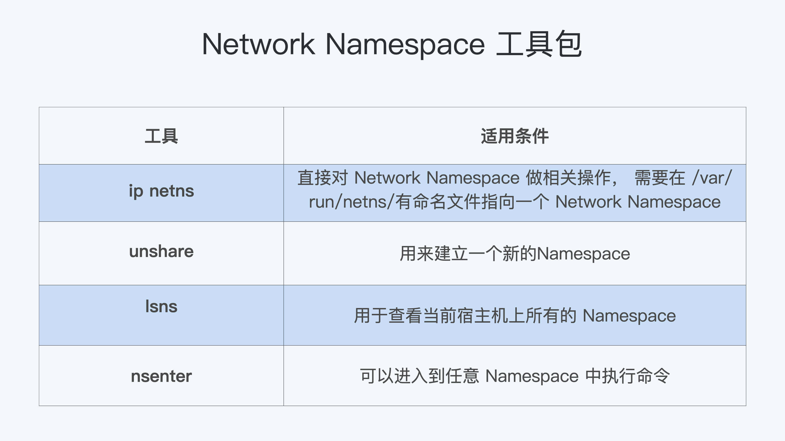

- 00 开篇词 一个态度两个步骤，成为容器实战高手.md.html
- 01 认识容器：容器的基本操作和实现原理.md.html
- 02 理解进程（1）：为什么我在容器中不能kill 1号进程？.md.html
- 03 理解进程（2）：为什么我的容器里有这么多僵尸进程？.md.html
- 04 理解进程（3）：为什么我在容器中的进程被强制杀死了？.md.html
- 05 容器CPU（1）：怎么限制容器的CPU使用？.md.html
- 06 容器CPU（2）：如何正确地拿到容器CPU的开销？.md.html
- 07 Load Average：加了CPU Cgroup限制，为什么我的容器还是很慢？.md.html
- 08 容器内存：我的容器为什么被杀了？.md.html
- 09 Page Cache：为什么我的容器内存使用量总是在临界点.md.html
- 10 Swap：容器可以使用Swap空间吗？.md.html
- 11 容器文件系统：我在容器中读写文件怎么变慢了？.md.html
- 12 容器文件Quota：容器为什么把宿主机的磁盘写满了？.md.html
- 13 容器磁盘限速：我的容器里磁盘读写为什么不稳定_.md.html
- 14 容器中的内存与IO：容器写文件的延时为什么波动很大？.md.html
- 15 容器网络：我修改了_proc_sys_net下的参数，为什么在容器中不起效？.md.html
- 16 容器网络配置（1）：容器网络不通了要怎么调试.md.html
- 17 容器网络配置（2）：容器网络延时要比宿主机上的高吗.md.html
- 18 容器网络配置（3）：容器中的网络乱序包怎么这么高？.md.html
- 19 容器安全（1）：我的容器真的需要privileged权限吗.md.html
- 20 容器安全（2）：在容器中，我不以root用户来运行程序可以吗？.md.html
- 加餐01 案例分析：怎么解决海量IPVS规则带来的网络延时抖动问题？.md.html
- 加餐02 理解perf：怎么用perf聚焦热点函数？.md.html
- 加餐03 理解ftrace（1）：怎么应用ftrace查看长延时内核函数？.md.html
- 加餐04 理解ftrace（2）：怎么理解ftrace背后的技术tracepoint和kprobe？.md.html
- 加餐05 eBPF：怎么更加深入地查看内核中的函数？.md.html
- 加餐06 BCC：入门eBPF的前端工具.md.html
- 结束语 跳出舒适区，突破思考的惰性.md.html
- 捐赠
15 容器网络：我修改了_proc_sys_net下的参数，为什么在容器中不起效？
你好，我是程远。
从这一讲开始，我们进入到了容器网络这个模块。容器网络最明显的一个特征就是它有自己的Network Namespace了。你还记得，在我们这个课程的[第一讲]里，我们就提到过Network Namespace负责管理网络环境的隔离。
今天呢，我们更深入地讨论一下和Network Namespace相关的一个问题——容器中的网络参数。
和之前的思路一样，我们先来看一个问题。然后在解决问题的过程中，更深入地理解容器的网络参数配置。
问题再现
在容器中运行的应用程序，如果需要用到tcp/ip协议栈的话，常常需要修改一些网络参数（内核中网络协议栈的参数）。
很大一部分网络参数都在/proc文件系统下的/proc/sys/net/目录里。
修改这些参数主要有两种方法：一种方法是直接到/proc文件系统下的”/proc/sys/net/“目录里对参数做修改；还有一种方法是使用sysctl这个工具来修改。
在启动容器之前呢，根据我们的需要我们在宿主机上已经修改过了几个参数，也就是说这些参数的值已经不是内核里原来的缺省值了.
比如我们改了下面的几个参数：
# # The default value:
# cat /proc/sys/net/ipv4/tcp_congestion_control
cubic
# cat /proc/sys/net/ipv4/tcp_keepalive_time
7200
# cat /proc/sys/net/ipv4/tcp_keepalive_intvl
75
# cat /proc/sys/net/ipv4/tcp_keepalive_probes
9
# # To update the value:
# echo bbr > /proc/sys/net/ipv4/tcp_congestion_control
# echo 600 > /proc/sys/net/ipv4/tcp_keepalive_time
# echo 10 > /proc/sys/net/ipv4/tcp_keepalive_intvl
# echo 6 > /proc/sys/net/ipv4/tcp_keepalive_probes
#
# # Double check the value after update:
# cat /proc/sys/net/ipv4/tcp_congestion_control
bbr
# cat /proc/sys/net/ipv4/tcp_keepalive_time
600
# cat /proc/sys/net/ipv4/tcp_keepalive_intvl
10
# cat /proc/sys/net/ipv4/tcp_keepalive_probes
6
然后我们启动一个容器， 再来查看一下容器里这些参数的值。
你可以先想想，容器里这些参数的值会是什么？我最初觉得容器里参数值应该会继承宿主机Network Namesapce里的值，实际上是不是这样呢？
我们还是先按下面的脚本，启动容器，然后运行 docker exec 命令一起看一下：
# docker run -d --name net_para centos:8.1.1911 sleep 3600
deec6082bac7b336fa28d0f87d20e1af21a784e4ef11addfc2b9146a9fa77e95
# docker exec -it net_para bash
[root@deec6082bac7 /]# cat /proc/sys/net/ipv4/tcp_congestion_control
bbr
[root@deec6082bac7 /]# cat /proc/sys/net/ipv4/tcp_keepalive_time
7200
[root@deec6082bac7 /]# cat /proc/sys/net/ipv4/tcp_keepalive_intvl
75
[root@deec6082bac7 /]# cat /proc/sys/net/ipv4/tcp_keepalive_probes
9
从这个结果我们看到，tcp_congestion_control的值是bbr，和宿主机Network Namespace里的值是一样的，而其他三个tcp keepalive相关的值，都不是宿主机Network Namespace里设置的值，而是原来系统里的缺省值了。
那为什么会这样呢？在分析这个问题之前，我们需要先来看看Network Namespace这个概念。
知识详解
如何理解Network Namespace？
对于Network Namespace，我们从字面上去理解的话，可以知道它是在一台Linux节点上对网络的隔离，不过它具体到底隔离了哪部分的网络资源呢？
我们还是先来看看操作手册，在Linux Programmer’s Manual里对Network Namespace有一个段简短的描述，在里面就列出了最主要的几部分资源，它们都是通过Network Namespace隔离的。
我把这些资源给你做了一个梳理：
第一种，网络设备，这里指的是lo，eth0等网络设备。你可以通过 ip link命令看到它们。
第二种是IPv4和IPv6协议栈。从这里我们可以知道，IP层以及上面的TCP和UDP协议栈也是每个Namespace独立工作的。
所以IP、TCP、UDP的很多协议，它们的相关参数也是每个Namespace独立的，这些参数大多数都在 /proc/sys/net/目录下面，同时也包括了TCP和UDP的port资源。
第三种，IP路由表，这个资源也是比较好理解的，你可以在不同的Network Namespace运行 ip route 命令，就能看到不同的路由表了。
第四种是防火墙规则，其实这里说的就是iptables规则了，每个Namespace里都可以独立配置iptables规则。
最后一种是网络的状态信息，这些信息你可以从/proc/net 和/sys/class/net里得到，这里的状态基本上包括了前面4种资源的的状态信息。
Namespace的操作
那我们怎么建立一个新的Network Namespace呢？
我们可以通过系统调用clone()或者unshare()这两个函数来建立新的Network Namespace。
下面我们会讲两个例子，带你体会一下这两个方法具体怎么用。
第一种方法呢，是在新的进程创建的时候，伴随新进程建立，同时也建立出新的Network Namespace。这个方法，其实就是通过clone()系统调用带上CLONE_NEWNET flag来实现的。
Clone建立出来一个新的进程，这个新的进程所在的Network Namespace也是新的。然后我们执行 ip link 命令查看Namespace里的网络设备，就可以确认一个新的Network Namespace已经建立好了。
具体操作你可以看一下这段代码。
int new_netns(void *para)
{
printf("New Namespace Devices:\n");
system("ip link");
printf("\n\n");
sleep(100);
return 0;
}
int main(void)
{
pid_t pid;
printf("Host Namespace Devices:\n");
system("ip link");
printf("\n\n");
pid =
clone(new_netns, stack + STACK_SIZE, CLONE_NEWNET | SIGCHLD, NULL);
if (pid == -1)
errExit("clone");
if (waitpid(pid, NULL, 0) == -1)
errExit("waitpid");
return 0;
}
第二种方法呢，就是调用unshare()这个系统调用来直接改变当前进程的Network Namespace，你可以看一下这段代码。
int main(void)
{
pid_t pid;
printf("Host Namespace Devices:\n");
system("ip link");
printf("\n\n");
if (unshare(CLONE_NEWNET) == -1)
errExit("unshare");
printf("New Namespace Devices:\n");
system("ip link");
printf("\n\n");
return 0;
}
其实呢，不仅是Network Namespace，其它的Namespace也是通过clone()或者unshare()系统调用来建立的。
而创建容器的程序，比如runC也是用unshare()给新建的容器建立Namespace的。
这里我简单地说一下runC是什么，我们用Docker或者containerd去启动容器，最后都会调用runC在Linux中把容器启动起来。
除了在代码中用系统调用来建立Network Namespace，我们也可以用命令行工具来建立Network Namespace。比如用 ip netns 命令，在下一讲学习容器网络配置的时候呢，我们会用到 ip netns，这里你先有个印象就行。
在Network Namespace 创建好了之后呢，我们可以在宿主机上运行 lsns -t net 这个命令来查看系统里已有的Network Namespace。当然，lsns也可以用来查看其它Namespace。
用 lsns 查看已有的Namespace后，我们还可以用 nsenter 这个命令进入到某个Network Namespace里，具体去查看这个Namespace里的网络配置。
比如下面的这个例子，用我们之前的clone()的例子里的代码，编译出clone-ns这个程序，运行后，再使用 lsns 查看新建的Network Namespace，并且用nsenter进入到这个Namespace，查看里面的lo device。
具体操作你可以参考下面的代码：
# ./clone-ns &
[1] 7732
# Host Namespace Devices:
1: lo: <LOOPBACK,UP,LOWER_UP> mtu 65536 qdisc noqueue state UNKNOWN mode DEFAULT group default qlen 1000
link/loopback 00:00:00:00:00:00 brd 00:00:00:00:00:00
2: eth0: <BROADCAST,MULTICAST,UP,LOWER_UP> mtu 1500 qdisc fq_codel state UP mode DEFAULT group default qlen 1000
link/ether 74:db:d1:80:54:14 brd ff:ff:ff:ff:ff:ff
3: docker0: <NO-CARRIER,BROADCAST,MULTICAST,UP> mtu 1500 qdisc noqueue state DOWN mode DEFAULT group default
link/ether 02:42:0c:ff:2b:77 brd ff:ff:ff:ff:ff:ff
New Namespace Devices:
1: lo: <LOOPBACK> mtu 65536 qdisc noop state DOWN mode DEFAULT group default qlen 1000
link/loopback 00:00:00:00:00:00 brd 00:00:00:00:00:00
# lsns -t net
NS TYPE NPROCS PID USER NETNSID NSFS COMMAND
4026531992 net 283 1 root unassigned /usr/lib/systemd/systemd --switched-root --system --deserialize 16
4026532241 net 1 7734 root unassigned ./clone-ns
# nsenter -t 7734 -n ip addr
1: lo: <LOOPBACK> mtu 65536 qdisc noop state DOWN group default qlen 1000
link/loopback 00:00:00:00:00:00 brd 00:00:00:00:00:00
解决问题
那理解了Network Namespace之后，我们再来看看这一讲最开始的问题，我们应该怎么来设置容器里的网络相关参数呢？
首先你要避免走入误区。从我们一开始的例子里，也可以看到，容器里Network Namespace的网络参数并不是完全从宿主机Host Namespace里继承的，也不是完全在新的Network Namespace建立的时候重新初始化的。
其实呢，这一点我们只要看一下内核代码中对协议栈的初始化函数，很快就可以知道为什么会有这样的情况。
在我们的例子里tcp_congestion_control的值是从Host Namespace里继承的，而tcp_keepalive相关的几个值会被重新初始化了。
在函数tcp_sk_init()里，tcp_keepalive的三个参数都是重新初始化的，而tcp_congestion_control 的值是从Host Namespace里复制过来的。
static int __net_init tcp_sk_init(struct net *net)
{
…
net->ipv4.sysctl_tcp_keepalive_time = TCP_KEEPALIVE_TIME;
net->ipv4.sysctl_tcp_keepalive_probes = TCP_KEEPALIVE_PROBES;
net->ipv4.sysctl_tcp_keepalive_intvl = TCP_KEEPALIVE_INTVL;
…
/* Reno is always built in */
if (!net_eq(net, &init_net) &&
try_module_get(init_net.ipv4.tcp_congestion_control->owner))
net->ipv4.tcp_congestion_control = init_net.ipv4.tcp_congestion_control;
else
net->ipv4.tcp_congestion_control = &tcp_reno;
…
}
那么我们现在知道Network Namespace的网络参数是怎么初始化的了，你可能会问了，我在容器里也可以修改这些参数吗？
我们可以启动一个普通的容器，这里的“普通”呢，我指的不是”privileged”的那种容器，也就是在这个容器中，有很多操作都是不允许做的，比如mount一个文件系统。这个privileged容器概念，我们会在后面容器安全这一讲里详细展开，这里你有个印象。
那么在启动完一个普通容器后，我们尝试一下在容器里去修改”/proc/sys/net/“下的参数。
这时候你会看到，容器中”/proc/sys/“是只读mount的，那么在容器里是不能修改”/proc/sys/net/“下面的任何参数了。
# docker run -d --name net_para centos:8.1.1911 sleep 3600
977bf3f07da90422e9c1e89e56edf7a59fab5edff26317eeb253700c2fa657f7
# docker exec -it net_para bash
[root@977bf3f07da9 /]# echo 600 > /proc/sys/net/ipv4/tcp_keepalive_time
bash: /proc/sys/net/ipv4/tcp_keepalive_time: Read-only file system
[root@977bf3f07da9 /]# cat /proc/mounts | grep "proc/sys"
proc /proc/sys proc ro,relatime 0 0
为什么“/proc/sys/” 在容器里是只读mount呢？ 这是因为runC当初出于安全的考虑，把容器中所有/proc和/sys相关的目录缺省都做了read-only mount的处理。详细的说明你可以去看看这两个commits:
- Mount /proc and /sys read-only, except in privileged containers
- Make /proc writable, but not /proc/sys and /proc/sysrq-trigger
那我们应该怎么来修改容器中Network Namespace的网络参数呢？
当然，如果你有宿主机上的root权限，最简单粗暴的方法就是用我们之前说的”nsenter”工具，用它修改容器里的网络参数的。不过这个方法在生产环境里显然是不会被允许的，因为我们不会允许用户拥有宿主机的登陆权限。
其次呢，一般来说在容器中的应用已经启动了之后，才会做这样的修改。也就是说，很多tcp链接已经建立好了，那么即使新改了参数，对已经建立好的链接也不会生效了。这就需要重启应用，我们都知道生产环境里通常要避免应用重启，那这样做显然也不合适。
通过刚刚的排除法，我们推理出了网络参数修改的“正确时机”：想修改Network Namespace里的网络参数，要选择容器刚刚启动，而容器中的应用程序还没启动之前进行。
其实，runC也在对/proc/sys目录做read-only mount之前，预留出了修改接口，就是用来修改容器里 “/proc/sys”下参数的，同样也是sysctl的参数。
而Docker的–sysctl或者Kubernetes里的allowed-unsafe-sysctls特性也都利用了runC的sysctl参数修改接口，允许容器在启动时修改容器Namespace里的参数。
比如，我们可以试一下docker –sysctl，这时候我们会发现，在容器的Network Namespace里，/proc/sys/net/ipv4/tcp_keepalive_time这个网络参数终于被修改了！
# docker run -d --name net_para --sysctl net.ipv4.tcp_keepalive_time=600 centos:8.1.1911 sleep 3600
7efed88a44d64400ff5a6d38fdcc73f2a74a7bdc3dbc7161060f2f7d0be170d1
# docker exec net_para cat /proc/sys/net/ipv4/tcp_keepalive_time
600
重点总结
好了，今天的课我们讲完了，那么下面我来给你做个总结。
今天我们讨论问题是容器中网络参数的问题，因为是问题发生在容器里，又是网络的参数，那么自然就和Network Namespace有关，所以我们首先要理解Network Namespace。
Network Namespace可以隔离网络设备，ip协议栈，ip路由表，防火墙规则，以及可以显示独立的网络状态信息。
我们可以通过clone()或者unshare()系统调用来建立新的Network Namespace。
此外，还有一些工具”ip”“netns”“unshare”“lsns”和”nsenter”，也可以用来操作Network Namespace。
这些工具的适用条件，我用表格的形式整理如下，你可以做个参考。
 接着我们分析了如何修改普通容器（非privileged）的网络参数。
由于安全的原因，普通容器的/proc/sys是read-only mount的，所以在容器启动以后，我们无法在容器内部修改/proc/sys/net下网络相关的参数。
这时可行的方法是通过runC sysctl相关的接口，在容器启动的时候对容器内的网络参数做配置。
这样一来，想要修改网络参数就可以这么做：如果是使用Docker，我们可以加上”—sysctl”这个参数；而如果使用Kubernetes的话，就需要用到”allowed unsaft sysctl”这个特性了。
思考题
这一讲中，我们提到了可以使用”nsenter”这个工具，从宿主机上修改容器里的/proc/sys/net/下的网络参数，你可以试试看具体怎么修改。
欢迎你在留言区分享你的收获和疑问。如果这篇文章对你有帮助，也欢迎转发给你的同事和朋友，一起交流探讨。
© 2019 - 2023 Liangliang Lee. Powered by gin and hexo-theme-book.